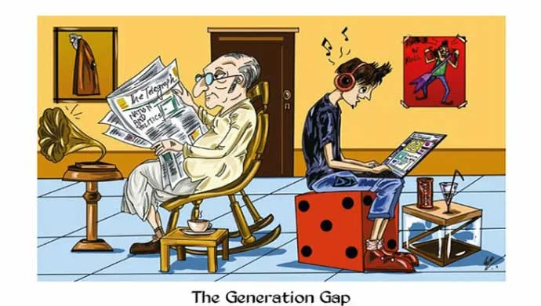

Skills review 2
Lesson 3 — Reading & Writing · generation gap · opinion essay
R1Four stops in 45 minutes
- 💡
Brainstorm
Where does the gap come from?
5 min - 📖
Reading
Headings · true or false
18 min - ✍️
Writing
An opinion essay
19 min - ✅
Wrap-up
Homework
3 min
Warm-up
Brainstorming
5 minutesWhat can you see? What do you think about it?

Generation gap = differences in opinions, habits, values and lifestyles between younger and older people.
Where does the generation gap come from?
- differences in interests
- differences in habits
- differences in viewpoints
- lack of time for each other
- parents impose decisions
- comparing children with others
Add more ideas!
Reading
Reasons for the generation gap
18 minutes1. Comparing to others · 2. Lack of understanding · 3. Lack of interaction
In most cultures, there is a generation gap between parents and their children. There are many reasons for this gap. Below are three of them.
A. 2 · Lack of understanding As each generation is strongly influenced by changes in society, parents and children may see the world differently. In addition, different lifestyles make it difficult for parents and their children to fully understand each other’s way of thinking. Many adult children even cut all ties with their parents.
1. Comparing to others · 2. Lack of understanding · 3. Lack of interaction
B. 3 · Lack of interaction Busy work and school schedules often prevent parents and children from spending time together. After a long and stressful day at work, parents come home, often feeling exhausted, and have little time to spend with their children. This leads to a lack of communication and widens the generation gap.
1. Comparing to others · 2. Lack of understanding · 3. Lack of interaction
C. 1 · Comparing to others Many parents keep comparing their children to other children, or even to how they behaved as children. They think it is good for their children to see these good examples and try to improve. However, this only makes the gap wider and causes their children to lose confidence in themselves. Some children may even start hating those people that they are compared to.
Underline the key words first
- Three reasons for the generation gap between parents and children are mentioned in the text. TRUE
- Changes in society help parents and children get closer to each other. FALSE
- Despite their busy schedules, all parents and children spend a lot of time together. FALSE
Underline the key words first
- Parents don’t have enough time for their children because they work long hours. TRUE
- Many parents believe that comparing their children to others is good for them. TRUE
Extra: each group writes 3 questions about the text for another group.
Writing
An opinion essay · 120–150 words
19 minutesIs it a good idea?
Some parents often compare their own childhood to their children’s experiences today with the intention of teaching them good behaviour. Do you think this is a good idea?
Opinion → reason → reason → conclusion
1 · Introduction
Give your opinion clearly.
2 · Reason 1
Explain it with an example.
3 · Reason 2
Add another reason and its effect.
4 · Conclusion
Restate your opinion.
Compare, don’t copy
Many parents compare their own childhood with their children’s experiences because they want to teach them good behaviour. In my opinion, parents should not make such a comparison for two reasons.
Firstly, parents and their children belong to different generations. Parents experienced different social changes and grew up in different economic conditions. However, many social norms have changed over the last decades. Therefore, it may be difficult to apply them to their children’s lives nowadays.
Compare, don’t copy
In addition, when children are compared to their parents, they may lose their confidence because they may think that they are not good enough. As a result, many of them will become afraid of living independently.
In conclusion, parents shouldn’t compare their life experiences with their children’s experiences because of generational differences and the negative feelings that this comparison may cause to their children.
Homework
1. Swap essays, give feedback and improve your essay.
2. Do the Review 1 exercises in the workbook.
3. Get ready for Unit 4 — ASEAN and Viet Nam.